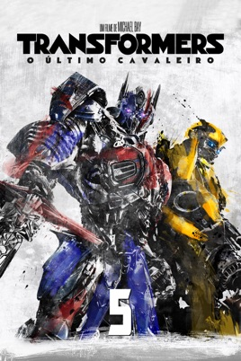

O Último Cavaleiro quebra os principais mitos da franquia Transformers, e redefine o que significa ser um herói. Humanos e Transformers estão em guerra, Optimus Prime desapareceu. A chave para salvar nosso futuro está enterrada nos segredos do passado, na história escondida dos Transformers na Terra.